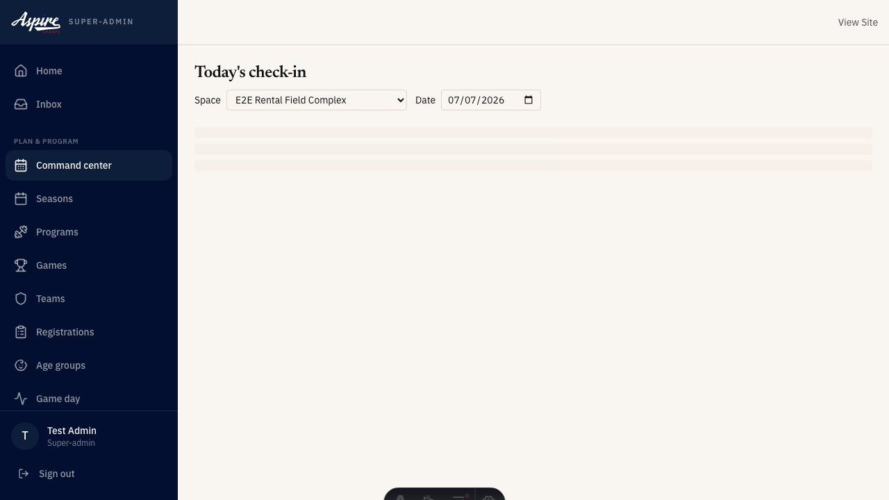

Trigger: ~15 minutes before each youth-league kickoff
Tracking: signature
Escalation: If event_lead unreachable, escalate to role.venue_manager per the
standard handoff ladder.
Procedure to be authored by the operating team. This activity is defined
in the catalog; full step-by-step SOP content will be added in a
follow-up PR.
Photographer check-in
Responsible · act.photographer_check_in
Trigger: ~30 minutes before first assigned match
Tracking: signature
Escalation: If photographer no-show, event_lead escalates to role.venue_manager;
pull from standby pool or accept reduced media coverage.
Procedure to be authored by the operating team. This activity is defined
in the catalog; full step-by-step SOP content will be added in a
follow-up PR.
Referee check-in
Accountable | Responsible · act.ref_check_in
Trigger: ~30 minutes before each kickoff
Tracking: signature
Escalation: If event_lead unreachable, escalate to role.venue_manager per the
standard handoff ladder; backup ref pulled from standby pool if
scheduled ref no-shows.
Procedure to be authored by the operating team. This activity is defined
in the catalog; full step-by-step SOP content will be added in a
follow-up PR.
Team check-in
Accountable | Responsible · act.team_check_in
Trigger: ~15 minutes before each kickoff
Tracking: form
Escalation: If event_lead unreachable, escalate to role.venue_manager per the
standard handoff ladder.
Procedure to be authored by the operating team. This activity is defined
in the catalog; full step-by-step SOP content will be added in a
follow-up PR.

Your day: in game
Code of conduct enforcement — Accountable | Responsible
Trigger: Conduct issue observed or reported during the match
Tracking: form
Escalation: If event_lead unreachable, escalate to role.venue_manager; for any
threatened violence escalate immediately to role.director and law
enforcement as appropriate.
Procedure to be authored by the operating team. This activity is defined
in the catalog; full step-by-step SOP content will be added in a
follow-up PR.
Incident response (in-the-moment)
Responsible · act.incident_response
Trigger: Incident observed or reported during the match
Tracking: form
Escalation: Any life-threatening incident escalates immediately to 911 and
role.director; venue_manager remains accountable for documentation
but role.event_lead may capture the initial form.
Procedure to be authored by the operating team. This activity is defined
in the catalog; full step-by-step SOP content will be added in a
follow-up PR.
Your day: post game
Ref stipend log — Accountable | Responsible
Ref stipend log
Accountable | Responsible · act.ref_stipend_log
Trigger: After ref's last match of the day
Tracking: form
Escalation: If event_lead unreachable, role.venue_manager logs the stipend and
escalates to role.director for sign-off.
Procedure to be authored by the operating team. This activity is defined
in the catalog; full step-by-step SOP content will be added in a
follow-up PR.
Your day: end of day
Staff debrief — Responsible
Staff debrief
Responsible · act.staff_debrief
Trigger: After facility close walkthrough is signed off
Tracking: form
Escalation: If venue_manager unreachable, role.event_lead runs the debrief and
escalates to role.director per the standard handoff ladder.
Procedure to be authored by the operating team. This activity is defined
in the catalog; full step-by-step SOP content will be added in a
follow-up PR.
Checklist: chk.ref_assignment_confirm
(placeholder — full checklist items pending operator authorship)
Safety & escalation
Any life-threatening incident escalates immediately to 911 and
role.director; venue_manager remains accountable for documentation
but role.event_lead may capture the initial form.
If event_lead unreachable, escalate to role.venue_manager per the
standard handoff ladder.
If event_lead unreachable, escalate to role.venue_manager per the
standard handoff ladder; backup ref pulled from standby pool if
scheduled ref no-shows.
If event_lead unreachable, escalate to role.venue_manager; for any
threatened violence escalate immediately to role.director and law
enforcement as appropriate.
If event_lead unreachable, role.venue_manager logs the stipend and
escalates to role.director for sign-off.
If photographer no-show, event_lead escalates to role.venue_manager;
pull from standby pool or accept reduced media coverage.
If venue_manager unreachable, role.event_lead delivers the briefing and
escalates to role.director per the standard handoff ladder.
If venue_manager unreachable, role.event_lead runs the debrief and
escalates to role.director per the standard handoff ladder.
You may need to escalate to: Director, Event Lead, Venue Manager
Your tools
/admin/game-day/today
Run-of-show for today's matches
/admin/check-in
Check-in support
Where to get help
Check this deck's Safety & escalation slide for your activity's specific chain.
Escalate per that chain first — most issues have a named next step.
Director is the final escalation tier for anything unresolved.